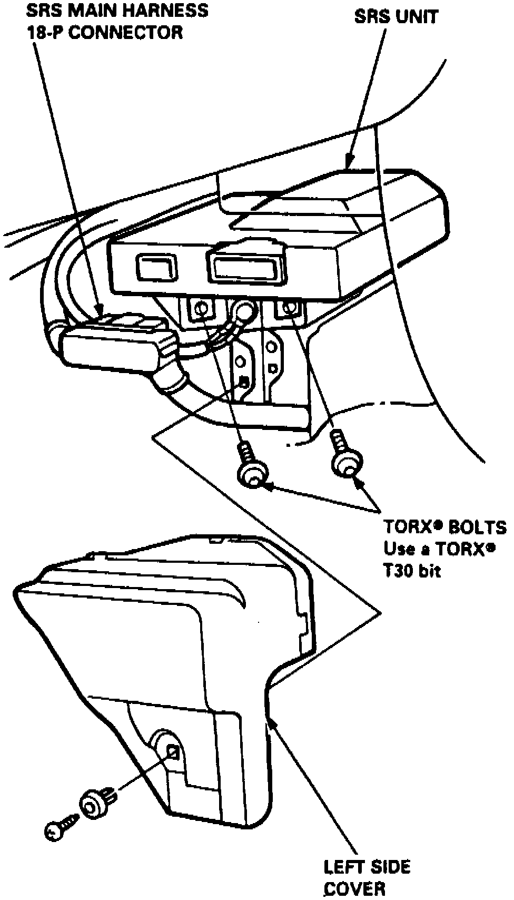

Air Bag Control Module: Service and Repair
REMOVAL1. On models equipped with radio coded theft protection system, refer to Vehicle Damage Warnings for system disarming and arming procedures. On models equipped with airbag system, refer to Technician Safety Information for system disarming and arming procedures.
2. Remove SRS control unit right and left side covers.
Fig. 25 SRS Unit Installation:

3. Disconnect 18 pin (18-P) electrical connector from SRS unit, Fig. 25.
4. Remove 4 SRS unit attaching bolts, then remove SRS unit. Store SRS unit in a dry clean area.
INSTALLATION
1. Ensure battery cables are disconnected and red short connectors are connected to air bag and cable reel electrical connectors.
2. Install SRS unit to mounting bracket, Fig. 25. Tighten attaching bolts to specifications.
3. Connect 18 pin (18-P) electrical connector to SRS unit. Push electrical connector into SRS unit until it clicks. Ensure SRS wiring harness is properly routed.
4. Install SRS control unit left and right side covers.
5. On models equipped with radio coded theft protection system, refer to Vehicle Damage Warnings for system disarming and arming procedures. On models equipped with airbag system, refer to Technician Safety Information for system disarming and arming procedures.